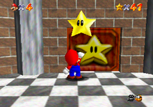
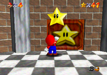

What Is the BLJ?
The Backwards Long Jump (BLJ) is a famous exploit in Super Mario 64 that allows Mario to build extreme backward speed. By exploiting uncapped backward velocity, players can clip through walls, skip star requirements, and reach late-game areas early.
BLJ in Action

 

Why the BLJ Works
- Backward speed has no hard cap
- Long jumps preserve momentum
- Stairs and slopes prevent full deceleration
- Repeated long jumps stack backward velocity
How to Perform a BLJ
- Find a staircase or slope (such as the endless stairs).
- Face away from the direction you want to go.
- Hold the Z button to crouch.
- Rapidly press A to long jump.
- Hold backward on the analog stick.
When done correctly, Mario will rapidly shake and then launch through doors or walls.
Famous BLJ Locations
- Endless Staircase – skip the 70-Star requirement
- Basement Stairs – early Bowser access
- Upward Slopes – wall clips and sequence breaks
BLJ by Game Version
| Version | BLJ Supported? |
|---|---|
| Nintendo 64 (Original) | Yes |
| Virtual Console | Limited |
| Nintendo Switch (3D All-Stars) | No (Patched) |
| PC Ports / Mods | Depends on build |